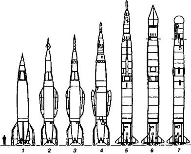
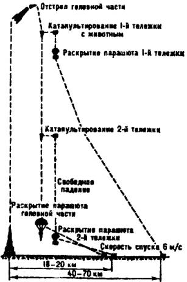
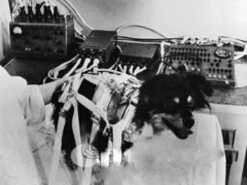

«Собаконавты»
Так иногда называют четвероногих лохматых испытателей, которые первыми испытали и стартовые перегрузки и космическую невесомость.
ПЕРВЫЕ ИСПЫТАТЕЛИ. Для запусков на суборбитальную орбиту было решено использовать модификацию тактической ракеты Р-11, которую в начале 50-х годов Михаил Янгель, главный инженер НИИ-88, сконструировал для сухопутных войск. По сравнению с Р-1 новая ракета имела в 2,5 раза меньшую стартовую массу при той же дальности полета.
Эксплуатационные особенности ракеты Р-11, в частности, возможность ее запуска с колесного или гусеничного транспортера, железнодорожного спецвагона, надводного и подводного корабля, позволяли расширить область ее применения и для научных исследований. Особый интерес представляла возможность геофизических наблюдений в тех районах Земли, куда доставлять ранее разработанные ракеты было практически невозможно, например, в Заполярье.
Ракета Р-11А, созданная на базе Р-11, была запущена с полигона на Новой Земле в октябре 1958 года и поднялась выше 100 км.
При этом, помимо изучения верхних слоев атмосферы, запуски геофизических ракет преследовали еще одну важную цель. Все конструкторы космической техники понимали, что когда-то придет день и на ракете в космос взлетит человек. А чтобы приблизить эту дату, необходимо было как можно раньше накопить сведения о том, как обеспечить человеку нормальные условия жизнеобитания.
По рекомендации академиков В. Черниговского и В. Парина для проведения экспериментов с живыми существами были взяты дворняги — беспородные собаки, поскольку именно эти животные отличаются большей устойчивостью к влияниям внешней среды, чем псы «благородных кровей». Кроме того, дворняжки, как правило, — собачки относительно небольших размеров. Их довольно легко разместить в специальном отсеке ракеты.
В то же время собаки быстро дрессируются, их можно приучить к существованию даже в непривычных условиях. Как рассказывал один из участников первых экспериментов над «четвероногими аэронавтами», доктор медицинских наук Виктор Борисович Малкин, поначалу хотели по примеру американцев использовать для подобных экспериментов небольших обезьянок. Но оказалось, что они очень нервные, от неожиданного стресса могут получить даже инфаркт. А потому академик О. Г. Газенко сказал, что нам ближе собаки, их физиология прекрасно изучена еще академиком И. Павловым.
«Звездный час» для «собаконавтов» пробил 22 июля 1951 года. Именно тогда на полигоне Капустин Яр состоялся первый полет «собачьего экипажа» на геофизической ракете с вертикальным запуском. Всего с июля 1951-го по сентябрь 1960 года состоялось 29-го так называемых собачьих пусков. Восемь собак из космоса так и не вернулись…
Готовили космических первопроходцев в Институте авиационной и космической медицины, расположенном за стадионом «Динамо». До революции здесь в красном кирпичном особнячке помещалась гостиница «Мавритания».
В советские времена гостиница оказалась за высоким забором. Эксперименты настрого засекретили. Первый «собачий» запуск состоялся ранним утром, когда небо чисто и ракету видно далеко-далеко. С рассвета у ракеты, торчком поставленной на бетонную тарелку стартового стола, копошились наладчики. Начальство обступило двух псов — Дезика и Цыгана, которым предстояло занять место на самой верхушке сооружения. Дворняги были одеты в специальные костюмы, помогающие удерживать на теле датчики, накормлены тушенкой, молоком и хлебом.
Королев подошел к руководителю медицинской программы Владимиру Ивановичу Яздовскому. «Знаешь что, а вдруг собаки чужих рук не послушаются? Я человек суеверный, полезай сам!..»

Научно-исследовательские ракеты СССР, созданные на базе боевых ракет в период с 1949-го по 1970 год: 1 — В-1А; 2 — В-1В; 3 — В-1Е; 4 — В-2А; 5 — В-5А; 6 — В-5В; 7 — «Вертикаль».
Яздовский с механиком Воронковым взобрались на верхотуру, к люку кабины. Им подали собак, уже закрепленных ремнями в особых лотках. Щелкнули замки. Яздовский на прощание провел рукой по собачьим мордам. «Удачи вам!»
И вот старт. Через несколько томительных минут ожидания в безоблачном небе забелел парашютный купол. Все побежали к месту приземления контейнера. «Живы!!!»
Так в одно утро была решена судьба пилотируемой космонавтики, получен ответ на главный вопрос: живые существа могут летать на ракетах.
А спустя неделю, во время второго испытания Дезик и его напарница Лиса погибли, открыв скорбный список жертв космоса. Во время их спуска не раскрылся парашют.
Тогда было решено первопроходца Цыгана больше в полет не отправлять. Пса забрал председатель Госкомиссии академик А. А. Благонравов. И говорят, что до конца дней своих первый «собаконавт» отличался суровым нравом и жутко не любил начальства. Когда однажды виварий посетил с инспекцией солидный генерал. Цыган тут же, недолго думая, вцепился в генеральский лампас. Но генерал пинать пса не стал — как-никак первопроходец космоса.

Схема полета геофизической ракеты с животными на борту.
ЭПИТАФИЯ ЛАЙКЕ. Всего, как уже говорилось, с июля 1951 года по сентябрь 1960 года состоялось 29 собачьих полетов на высоту 100–150 км. Часть из них закончилась трагически: собаки гибли из-за разгерметизации кабины, отказов парашютной системы, неполадок в системе жизнеобеспечения.
Но все это проходило в обстановке строгой секретности. Первой «рассекреченной» жертвой стала дворняга Лайка. Но и тут все было не совсем так, как писали газеты того времени.
После того как на орбиту был выведен первый искусственный спутник Земли, тогдашний руководитель СССР Н. С. Хрущев потребовал от Королева следующего, не менее эффектного старта. Тогда главный конструктор решил отправить на втором спутнике собаку. С самого начало было ясно — собака погибнет: возвращать объекты из орбитального полета тогда не умели.
Из десятка подготовленных «испытателей» отобрали сначала трота — Альбину, Лайку и Муху. «Но Альбина уже дважды летала и достаточно послужила науке, — рассказывал Владимир Иванович Яздовский. — К тому же у нее были щенята. Решили ее пожалеть. В качестве космонавта выбрали двухлетнюю Лайку. Была она славной, ласковой. Жалко было ее…»
О том же вспоминал и один из непосредственных участников подготовки того полета, мастер сборочного производства Юрий Силаев: «Есть вялые собаки, а Лайка была бойкой собакой. И выбирали таких — шустрых… Перед самым стартом Сергей Павлович сказал мне: „Юра, лезь, закрывай свой лючок. Опломбируй все как следует. Посмотри, чтобы все было герметично. Постучи ей, чтобы она поднялась. И мне доложишь“.
Я полез, говорю: „Ну, посмотри на меня, посмотри“. Стучу по контейнеру, чтобы у нее хоть какие-то были эмоции. А она все время лежит на кормушке своей… А я ее все тормошу. Наконец она встряхнулась два раза, как обычно собаки встряхиваются. „Ну, вот и хорошо, милая. А теперь я тебя закрою и будешь дышать уже не атмосферой, а другим воздухом, который будет тебе подаваться…“ Тем временем ракета заправлялась. У меня было всего минут 15–20 на всю эту операцию. В глазах отражение света от фонарика. Глазки блестят. Такие вроде плачевные, а вроде и нет.

„Космонавтка“ Белка перед запуском в космос.
Ну, в общем-то, у нее было нормальное состояние. Так я и доложил Сергею Павловичу…»
И 3 ноября 1957-го Лайка отправилась на орбиту. Несколько часов она жила в невесомости, а потом, как гласят официальные сообщения, «космонавтку» усыпили. Но это было благообразное вранье. «В полете корабль сильно нагрелся — отводить лишнее тепло мы еще не умели, — вспоминал корифей космической медицины академик Олег Георгиевич Газенко. — Собачка умерла от жары…»
Еще несколько месяцев спутник с телом погибшей Лайки накручивал витки над Землей. Только в апреле 1958-го он вошел в плотные слои атмосферы и сгорел.
ДАМЫ — ВПЕРЕД! После старта Лайки в Советском Союзе почти три года не отправляли на орбиту биологические объекты: шла разработка возвращаемого корабля, оснащенного системами жизнеобеспечения. В начале 1960 года он был разработан. На ком его испытывать? Конечно же, на собаках!
Интересная деталь — в полеты на космическом корабле стали отправлять только самок. Объяснение простое: для женской особи оказалось проще сделать скафандр с системой приема мочи и кала.
В середине лета 1960 года в сборочном цехе уже стояло сразу три объекта. И С. П. Королев впервые сказал, что на таких кораблях уже полетят люди. «Но сначала пусть собачки освоят эти корабли. А уж когда будет уверенность, что они благополучно возвращаются назад, тогда можно будет поговорить и о космонавтах», — уточнил он.
«Помню, привезли как-то в корпус собак десять, — продолжает Силаев. — Выпущенные из клеток, они с лаем кинулись бегать по цеху. Ну, конечно, все рабочие прекратили работу, смотрят. „Приехала псарня!“».
И все они были такого роста, как и Лайка.
Их отправляли в катапульте, как потом Гагарина.
Перед тем как полететь человеку, состоялось несколько предварительных пусков. Но о первом (28 июля 1960 года) советская пресса промолчала — на 19-й секунде полета у ракеты «Восток» отвалился боковой блок, она упала и взорвалась. При этом погибли собаки Чайка и Лисичка. Их дублеры, Белка и Стрелка, удачно слетали на следующем корабле и стали знамениты. Они остались жить в институте и умерли от старости. А вот стартовавшим вслед за ними на третьем корабле 1 декабря 1960 года Пчелке и Мушке не повезло. Они погибли от удушья и жары, так как спусковой отсек из-за сбоя тормозной системы перешел на более высокую орбиту и не приземлился, как было намечено.
На следующих кораблях собак запускали уже по одной. Клетки с ними помещали в ногах у манекена, сидевшего в кресле и изображавшего космонавта. Последней в космосе за три недели до старта Гагарина побывала Звездочка.
После проведения этой серии экспериментов было доказано, что необходимые условия для жизни животных в течение 4 часов и более могут быть эффективно обеспечены с помощью герметических кабин регенерационного типа и системы спуска головного отсека с помощью парашюта.
Программа медико-биологических экспериментов на геофизических ракетах показала, что высотный полет с перегрузками и невесомостью не оказывает заметного влияния на поведение и физиологию животных. Обычно животные спокойно лежали в скафандрах и лишь в некоторые моменты инерционного движения ракеты становились беспокойными и проявляли «значительную двигательную активность», покачивая головой и подергиваясь.
У собак, летавших несколько раз, стрессовые отклонения физиологических реакций в повторных полетах были значительно меньше, чем поначалу. Собака по кличке Отважная, слетавшая в космос четыре раза, с каждым полетом адаптировалась к состоянию невесомости все легче. На основании этого медиками было высказано предположение о целесообразности повторных полетов космонавтов будущего для более быстрой адаптации организма к состоянию невесомости. И надо сказать, оно подтвердилось затем на практике.
А сам Ю. А. Гагарин, говорят, однажды сострил в неформальной обстановке уже после полета: «Так и не пойму до сих пор, кто я — то ли первый космонавт, то ли последняя собака…»